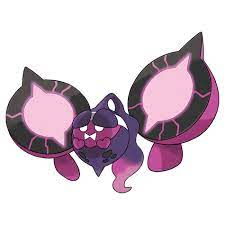

O tipo deste Pokémon muda com base
na máscara que ele usa. Ele confunde
os seus inimigos com
movimentos e chutes ágeis.
Ele alimenta as pessoas com mochis
tóxicos que despertam desejos e capacidades.
Aqueles que comem o mochi ficam
sob o controle de Pecharunt,
acorrentados à sua vontade.
A concha é feita de energia Terastal
cristalizada. Quando atingida por um
movimento, esta concha absorve
a energia do movimento
e transfere-a para Terapagos.
Descrição
Descrição
Descrição